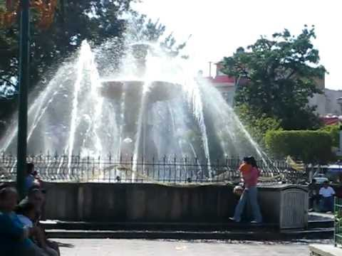
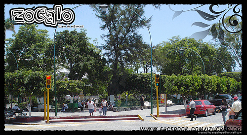
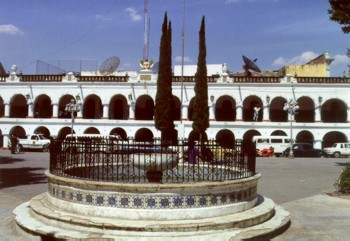
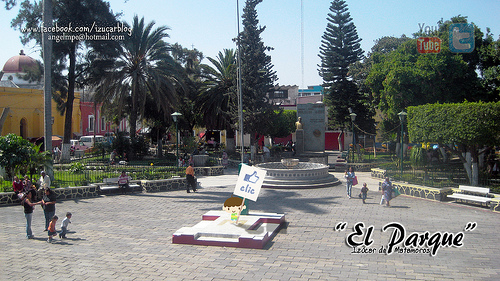
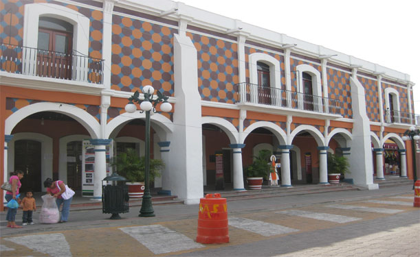
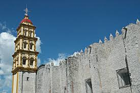
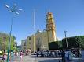

LUGARES MAS CONOCIDOS Y VISITADOS
Estos son algunos lugares mas conocidos y visitados de esta region los cuales son en los que mas a diario los visitan,
ye sea que se festeje alguna feria de algun santo o por celebraciones ya tradicionales ya que adornan alrededor de este
lugar, depende lo que se festeje, es muy bonito porque te vas a distraer a cualquier hora y momento con la familia o amigos.

ZOCALO DE IZUCAR DE MATAMOROS
Tambien contamos con un hermoso y gran zocalo, este se encuentra en el centro de este municipio.
Es muy hermoso porque cuando son fiestas patronales o algunas celebraciones ya tradicionales adornar
alrededor y hacen varias festividades u otras cosas mas casi la mayoria de las personas suelen ir a
tomar un descanso o a platicar sea a cualquier hora del dia.


Para mas informacion puedes entrar a este link...
PARQUE PAVON
Este es un pequeño parque el cual se encuentra atras de la casa colorada en el centro de izucar casi muy pocos lo visitan
porque como casi esta un poco cerca del zocalo, y pues es un poco pequeño solo es visitado cuando las personas van a comer al
tianguillo y se encuentra al frente de este pero al igual esta bonito y es un lugar tranquilo.
 
Para mas informacion puedes entrar a este link...
CASA COLORADA
Este lugar es muy conocido porque se encuentra frente al zocalo, en este lugar es como una oficina porque
hacen juntas, son los cursos de verano y entre otras cosas mas.

Para mas informacion puedes entrar a este link...
EX CONVENTO DE SANTO DOMINGO
Este lugar es muy conocido porque hace años fue un ex convento y haora es una iglecia en la cual
hacen una gran celebracion y entre otras mas celebraciones y sus festividades son grandes.
 
Para mas informacion puedes entrar a este link...